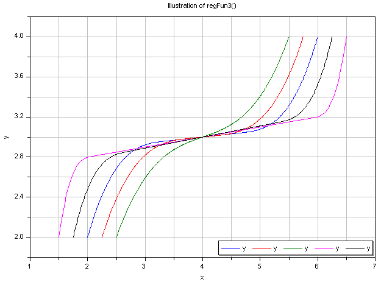

regFun3Co-monotonic and C1 smooth regularization function |
|
Information
This information is part of the Modelica Standard Library maintained by the Modelica Association.
Approximates a function in a region between x0 and x1
such that
- The overall function is continuous with a continuous first derivative everywhere.
- The function is co-monotone with the given data points.
In this region, a continuation is constructed from the given points
(x0, y0), (x1, y1) and the respective
derivatives. For this purpose, a single polynomial of third order or two
cubic polynomials with a linear section in between are used [Gasparo
and Morandi, 1991]. This algorithm was extended with two additional
conditions to avoid saddle points with zero/infinite derivative that lead to
integrator step size reduction to zero.
This function was developed for pressure loss correlations properly
addressing the static head on top of the established requirements
for monotonicity and smoothness. In this case, the present function
allows to implement the exact solution in the limit of
x1-x0 -> 0 or y1-y0 -> 0.
Typical screenshots for two different configurations
are shown below. The first one illustrates five different settings of xi and yid:

The second graph shows the continuous derivative of this regularization function:

Literature
- Gasparo M. G. and Morandi R. (1991):
- Piecewise cubic monotone interpolation with assigned slopes. Computing, Vol. 46, Issue 4, December 1991, pp. 355 - 365.
Syntax
Inputs (7)
| x |
Type: Real Description: Abscissa value |
|---|---|
| x0 |
Type: Real Description: Lower abscissa value |
| x1 |
Type: Real Description: Upper abscissa value |
| y0 |
Type: Real Description: Ordinate value at lower abscissa value |
| y1 |
Type: Real Description: Ordinate value at upper abscissa value |
| y0d |
Type: Real Description: Derivative at lower abscissa value |
| y1d |
Type: Real Description: Derivative at upper abscissa value |
Outputs (2)
| y |
Type: Real Description: Ordinate value |
|---|---|
| c |
Type: Real Description: Slope of linear section between two cubic polynomials or dummy linear section slope if single cubic is used |